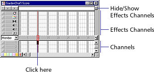
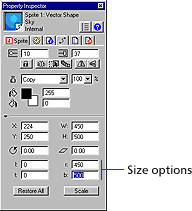
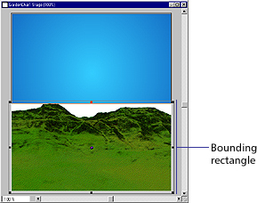
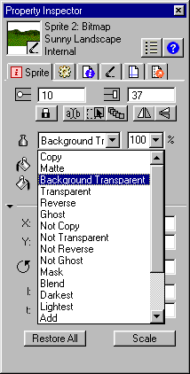
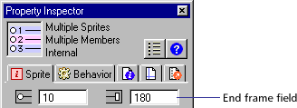
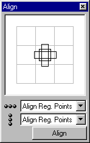
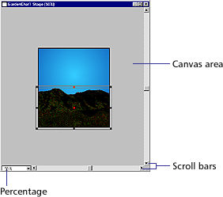
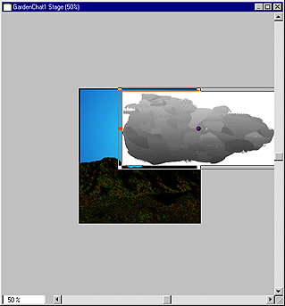
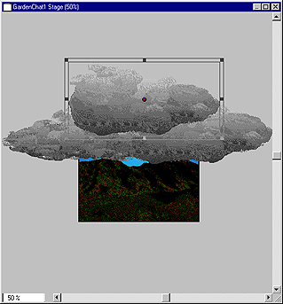

Using Director > Director 8 Tutorial > Create sprites from cast members
Using Director > Director 8 Tutorial > Create sprites from cast members |
Create sprites from cast members
You're now ready to start creating sprites—objects that control when, where, and how your cast members appear in your movie. For example, when you move a cast member to the Stage, you're creating a sprite to indicate where the cast member appears in your movie. When you move a sprite to the Score, you're creating a sprite to indicate when the cast member appears.
1 |
Make sure the Cast window, Score, Stage, and Property Inspector are visible. If they're not, choose them from the Window menu. |
2 |
In the Score, click frame 10 of channel 1 to select it.
 |
It's a good idea to select the frame in the Score before creating a sprite to ensure that the cast member ends up in the desired frame. |
|
3 |
In the Cast window, drag the Sky cast member to the center of the Stage. |
You've created a sprite. Notice that the sprite starts on frame 10 in the Score, which is the frame you selected in the previous step. |
|
Now you need to resize the Sky sprite to fit on the Stage. The most accurate method is to use the Property Inspector. |
|
4 |
Click the Sky sprite to select it. On the Sprite tab of the Property Inspector, set the Left, Top, Right, and Bottom options to 0, 0, 450, and 500, respectively.
 |
Most changes that you make to a sprite do not affect the cast member assigned to the sprite. When you resize a sprite, therefore, the cast member used to create the sprite does not resize. |
|
Note: Sprites, by default, span 28 frames. You can change this default setting in the Sprite Preferences dialog box (Choose File > Preferences > Sprite.)
You can control the way a sprite's colors appear in Director by applying inks.
1 |
Drag the Sunny Landscape cast member to frame 10 of channel 2 in the Score. |
The new sprite appears inside a white box—the sprite's bounding rectangle—in the center of the Stage. |
|
2 |
Drag the Sunny Landscape sprite to the bottom of the Stage.
 |
You can make the bounding rectangle transparent by applying Background Transparent ink, which takes the pixels of a specified color (the default is white) and makes them transparent.
3 |
Make sure the Sunny Landscape sprite is selected. In the Sprite tab of the Property Inspector, select Background Transparent from the Ink pop-up menu.
 |
The landscape's bounding rectangle becomes transparent. |
|
Change the duration of sprites
The Sky and Sunny Landscape sprites should be on the Stage while most of the movie plays, until frame 180.
1 |
Hold down Shift and click both sprites in the Score. |
When you select multiple sprites, you can change settings for all selected sprites in the Property Inspector. |
|
2 |
To extend the sprites to the 180th frame, enter 180 in the End Frame field on the Sprite tab of the Property Inspector. When you click anywhere in the window, the sprite spans extend to the 180th frame.
 |
You can lock a sprite to avoid inadvertent changes to it, either by you or by others working on the same project. Since you will be aligning one landscape over another, lock the Sunny Landscape in place.
After you lock a sprite, you cannot move it or change its settings until you unlock it.
1 |
Select the Sunny Landscape sprite either on the Stage or in the Score. |
2 |
On the Sprite tab of the Property Inspector, click the Lock button.
|
Note: To unlock a sprite that is locked, you can select it in the Score and then click the Lock button.
Since the tutorial movie begins with a cloudy day, you'll create additional sprites on top of the sunny landscape background to produce the overcast effect.
1 |
Drag the Cloudy Landscape cast member to frame 10 of channel 3 in the Score. If necessary, click the sprite to select it and make the Score window active. |
2 |
In the Sprite tab of the Property Inspector, select Background Transparent from the Ink pop-up menu. |
3 |
To align the two landscapes accurately, select both landscape sprites in the Score and choose Modify > Align. |
4 |
In the Vertical Alignment and Horizontal Alignment pop-up menus, select Align Reg. Point and then click Align.
 |
5 |
Click OK when Director warns that the change will only apply to the unlocked sprite. |
The two sprites align by their registration points. By default, the registration point of a bitmap cast member is its center. |
|
6 |
On the Sprite tab of the Property Inspector, enter 130 in the End Frame field. |
Again, click OK when Director warns that the change will affect only the unlocked sprite. |
|
Remember to save your work frequently. |
|
Before you create an animated sequence that moves clouds across the sky, you will reduce the size of the Stage to make it easier to arrange the clouds.
In Director's authoring environment, you can use zooming to make the Stage either larger or smaller than your original movie. Zooming only affects your view of the Stage; it does not affect the Stage Size settings specified in the Property Inspector.
Director offers several different ways to zoom the Stage out, including the following method:
1 |
Click the Stage to make sure it's active. |
2 |
Press Control-minus (Windows) or Command-minus (Macintosh) once to decrease the Stage size to 50%. |
The percentage of the Stage size appears in the Stage title bar. |
|
Notice that as you decrease the size of the Stage, you're increasing the size of the canvas area—the offstage area where you can drag cast members either before or after they appear on the Stage.
 |
|
1 |
In the Score, select frame 10 of channel 4. |
2 |
Drag the Cloud02 cast member to the Stage, placing it just above the mountain closest to the right edge of the Stage. It does not matter if the Cloud extends off the Stage into the canvas area.
 |
3 |
On the Sprite tab of the Property Inspector, type 120 in the End Frame field to extend the sprite's duration. |
4 |
Set the sprite's ink to Background Transparent. |
5 |
In the Score, create a sprite of the Cloud01 cast member in frame 10 of channel 5. Select the sprite and set its end frame to 95 and its ink to Background Transparent. |
6 |
On the Stage, position the Cloud01 sprite to the left of the Cloud02 sprite. |
7 |
Create another sprite of Cloud02 in frame 10 of channel 6. Select the sprite and set its end frame to 75 and its ink to Background Transparent. |
8 |
Position the sprite on the Stage to cover as much of the visible blue sky as possible.
 |